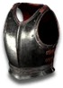

Set - Heyday
Forgotten Treasures
6 items, level 15

Fernandez' Plate
Breast Plate
Defense: 65-68
Required Level: 15
+75-120% Enhanced Defense
Socketed (3)
(4 items) +10% Magic Resistance
(6 items) +15% Physical Damage Reduction

Katriana's Mask
Mask
Defense: 9-27
Required Level: 15
+60-100% Enhanced Defense
Socketed (3)
(2 items) +30 to Mana
(5 items) +50% Mana Regeneration

Luther's Cord
Heavy Belt
Defense: 6-6
Required Level: 10
+20-30 Defense
Replenish +2-5 Life per 10 Seconds
(3 items) +50 to Life
(4 items) +5% Mana stolen per hit

Janis' Gloves
Heavy Gloves
Defense: 5-6
Required Level: 10
+20-30 Defense
+20% Increased Attack Speed
(4 items) +5% Life stolen per hit
(6 items) +10 to Strength

Xavier's Greaves
Light Plated Boots
Defense: 9-11
Required Level: 15
+80-110% Enhanced Defense
+30% Faster Run/Walk Speed
(3 items) +20% Faster Hit Recovery
(5 items) +10 to Dexterity

Quincy's Shield
Spiked Shield
Defense: 15-25
Chance to Block: 10%
Required Level: 10
+100-135% Enhanced Defense
Socketed (3)
(2 items) +25% Faster Block Rate
(4 items) 20% Increased Chance of Blocking
Set bonuses
- 2 items: +15 to Strength
- 3 items: +15 to Dexterity
- 4 items: +15 to Energy
- 5 items: +15 to Vitality
Full set
- +2 to All Skills
- +40% to All Resistances
- +100% Chance Items Roll Magic or Better
- +4% to Experience Gained
- +200% Extra Gold from Monsters